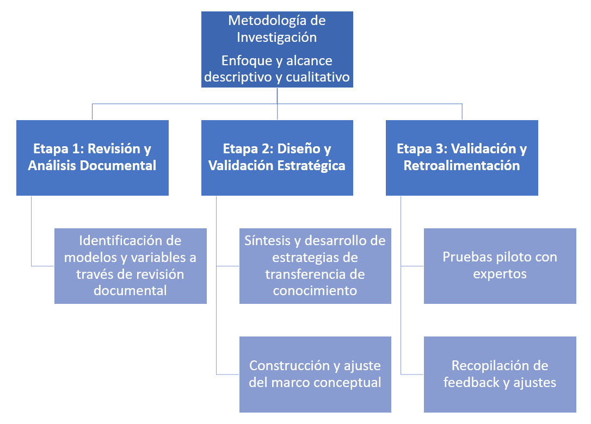

METODOLOGÍA
Este estudio adopta un enfoque descriptivo y cualitativo, siguiendo a Hernández Sampieri et al., (2010), para explorar sistemáticamente las características y dinámicas de la formación dual y transferencia de conocimiento en TIC en Medellín. A través del análisis documental y la exploración de percepciones y experiencias de los involucrados, busca ofrecer una visión detallada sin alterar las variables estudiadas, sentando bases para futuras investigaciones y aplicaciones educativas en este contexto.
| Etapas | Objetivo | Técnica | Herramienta | Fuentes de información |
|---|---|---|---|---|
| Etapa 1 | Seleccionar los modelos, herramientas y variables existentes, utilizadas en la transferencia del conocimiento en el contexto de la formación | Revisión bibliográfica | Matriz de análisis documental | Publicaciones académicas, informes de organismos de TIC, documentación de programas de formación dual existentes, bases de datos de educación y tecnología. |
| Etapa 2 | Diseñar una estrategia de transferencia de conocimiento entre instituciones educativas y empresas para implementar programas de formación dual en el ámbito de las TIC | Análisis cualitativo y diseño estratégico | Marco conceptual para el diseño de la estrategia | Información recopilada en la Etapa 1, entrevistas con expertos en formación dual y TIC, talleres participativos con stakeholders educativos y tecnológicos de Medellín. |
| Etapa 3 | Validar la estrategia de transferencia de conocimiento propuesta a través de la realización de pruebas piloto y la retroalimentación de actores clave en la educación técnica en Medellín | Validación experta y análisis de feedback | Encuestas y sesiones de feedback | Expertos en educación TIC, formadores, profesionales de la educación dual, representantes de instituciones educativas. |